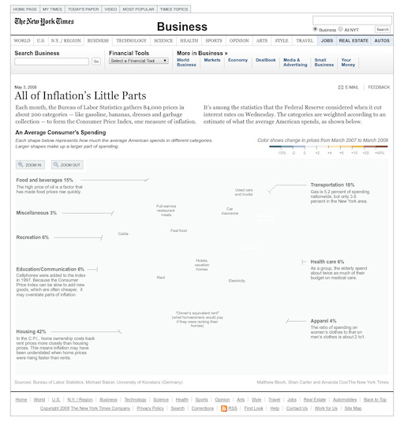

In The Rhetoric of the Image (1964), Roland Barthes states that
“advertising prioritizes the directness of the image and its efficacy in
transmitting the advertisement’s message” (
"The Evolution of Instagram Activism"). The first examples of graphic design are sourced to the
Renaissance era with printer’s marks, small logos on the first mass-produced
books. It was not until the mid-17th century that corantos, ancestors of
newspapers, featured ads for products. In the 20th century, agencies that
created logos and ads for companies were developed, as companies began to
realize the power of visual communication.
The application of graphic design to social activism can be traced to the
work of W.E.B. Du Bois. At the 1900 World’s Fair, W.E.B. Du Bois and his
team at Atlanta University created “data portraits” that used information
from sociological research about Black Americans’ economic and social
conditions. In fact, Du Bois can be credited for creating some of the first
infographics; his work “employed a distinctly European visual vocabulary --
one that drew on Florence Nightingale’s well-known infographics as well as
proto-modernist design” (
"The Evolution of Instagram Activism"). Like the main purpose of
infographics to make data and information accessible to the general public,
Du Bois hoped his infographics would be readable for the black community.
Political art has been an important means of subversion, a popular manner
being “imitating popular visual styles” (
"The Evolution of Instagram Activism"). In The Design of Dissent
(2004), Milton Glaser and Mirko Ilić discuss “subtle manipulation of logos
and advertising campaigns, and not-so-subtle photoshop collages” (
"The Evolution of Instagram Activism"). The familiarity of these designs
allow artists to spread their message to a wider audience.
In
"Between Rebel Creativity and Reification: For and Against Visual Activism,"
TJ Demos dissects the visual activist work of three groups:
Laboratory of Insurrectionary Imagination (Labofii), the Grupo de
Investigación en Arte y Política (GIAP), and the photographer Subhanker
Banerjee. Labofii aims “to celebrate ‘the beauty of collective creative
disobedience’” and build “affinity groups rather than informing strangers of
issues through visual language.” GIAP is a research collaboration that hopes
to “investigate the aesthetics and politics of revolutionary movements,
especially the Zapatistas’ long-standing, indigenous-led rural assertion of
political, social, and environmental autonomy.” While Labofii’s and GIAP’s
work emphasize the connectedness of visuality and activism, Subhanker
Banerjee’s photography focuses on the ability of visual activism to
challenge and influence the audience of galleries. Banerjee’s work draws
attention to the Arctic conservation and indigenous human rights movements.
Even though Banerjee’s work hopes to “generate political drive via museum
exhibitions and internet-based systems of reproducibility and distribution,”
all three examples refuse to contribute to the dominant art institutions
that may be connected to “the right-wing agenda of corporate neoliberalism,
wealth inequality, and the destruction of the social state.”
The emergence of computers and computer applications of vector drawing and
photographic processing since the 1980s facilitated the creation of
infographics. In the 2010 documentary
Journalism in the Age of Data, Jeffrey Heer predicted the
growing importance of data visualization for the next decade. At the time
the “amount of and access to data [was] exploding.” Data visualization is
valued for putting data in context and allowing a larger audience to better
understand complex data. Both artists and journalists are continuing to
explore the capabilities of data visualization--how to effectively convey
the narrative of a set of data to an audience. Back in 2010, bad visualization
was a dangerous threat, for the audience had to make their own conclusions
from a set of data, which had the possibility of error. That era also
introduced a new trend of data visualization meeting motion graphics and
narrative, such as with the work of “The
Crisis of Credit Visualized” by Jonathan Jarvis (2009). Overall, data
visualization was holding increasing importance in the world of journalism,
with The New York Times at the forefront of interactive and sophisticated
graphics and other companies like MSNBC and BBC News Online looking to
incorporate more employees that can work on data-based journalism.

image courtesy of The New York Times
With the increasing use of infographics with the spread of technology in the
past decade, “infographics are being increasingly used for public advisories,
disseminating protocols for healthcare professionals, and post-publication
promotion of research,” which has been especially important during the
COVID-19 pandemic (
"Preparing Infographics for Post-publication Promotion of Research on
Social Media"). Healthcare professionals are expected to keep up with
a large influx of new research findings, so infographics on social media
help to relieve that with their effectiveness for providing fast
dissemination. In addition, among the rise of fake news on social media,
infographics provide credible public health information for the general public.
In 2017, Instagram launched their 10-image carousel feature. Today it is being
used to educate and inform people with text-based graphics on a platform that
is focused on sharing images rather than text. With the increase in Black
Lives Matter protests after the murder of George Floyd in March 2020,
graphic design has become a powerful tool to share information about police
brutality and racial discrimination, increasing public support of the
movement. The informative Instagram slideshows that exploded over social
media have been branded as “PowerPoint activism” (
"How social justice slideshows took over Instagram"). They are
characterized by “wide chunky typefaces and bold gradient graphics”
(
"How social justice slideshows took over Instagram"). Their simplicity
engages readers, pausing a user’s scroll and causing them to read the text.
There is a sort-of familiarity to the designs that are reminiscent of
brand marketing that makes the information approachable and shareable. This
is reflected in the “corporatization of progressive politics”
(
"How social justice slideshows took over Instagram"). The creator of
the famous Instagram account @so.informed was inspired by the “inspirational
graphics popular among millennial women” (
"How social justice slideshows took over Instagram") in hopes of
appealing to the apolitical members of society. This aestheticization has
come under fire, though, for its potential of long-term trivialization of
pressing issues in society. Furthermore, the graphics’ failure to accurately
capture the complexity of issues has a strong potential for misinformation.


{kind=link}
{kind=link}
{kind=link}
{kind=link}
{kind=link}